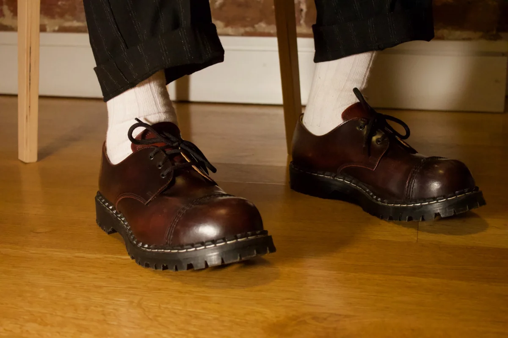
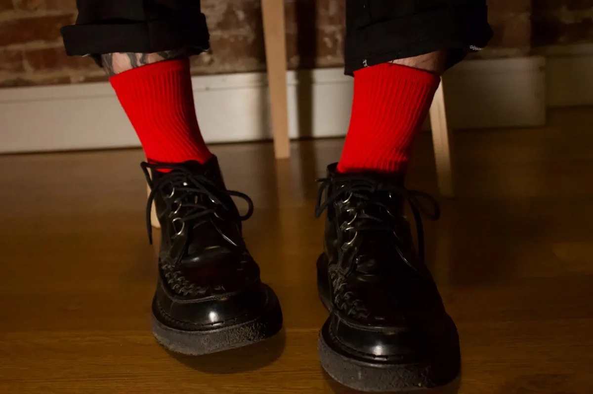
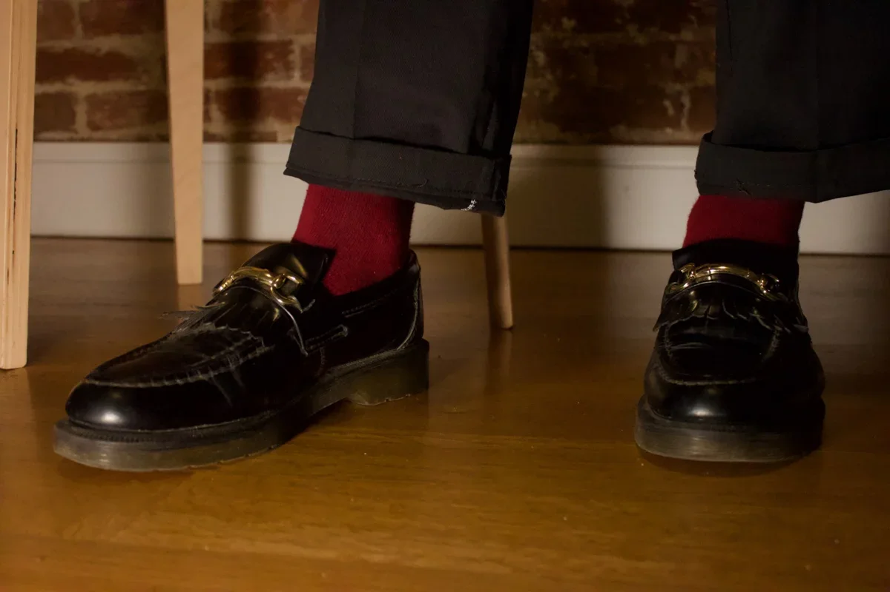

Best Socks for Creepers, Loafers, and Boots
This lineup is stripped down to the essentials: brogues, loafers, creepers. These are the socks I actually wear — the ones that sharpen the look instead of softening it.
No ironic patterns or loud logos. Just subtle shifts in weight, length, and color that add intention. These are wardrobe tools, not afterthoughts.
This post contains affiliate links. I may earn a commission if you purchase through them — at no extra cost to you.
1. Ribbed White Socks
These thick, off-white socks add a deliberate contrast to the deep oxblood brogues and pinstripe trousers. They ground the fit in a clean, utilitarian way — intentional, not flashy.
Their visible texture gives the outfit weight and subtly channels a post-punk workwear edge.
2. Ribbed Red Socks
The red socks cut through the dark palette with bold contrast. Paired with creepers and cuffed trousers, they feel punk, sharp, and intentional.
3. Deep Burgundy Socks
Burgundy is my go-to when I want color that doesn't clash. It adds warmth while keeping the look grounded.
Why I wear them: They're subtle. You only notice them if you're paying attention — and that’s the point.
🧼 Final Tip: Thick Socks for Hard Shoes
Hard shoes need soft reinforcements. Fox River’s thick socks are my buffer against the break-in period (and loose fits). They're lifesavers on long days.